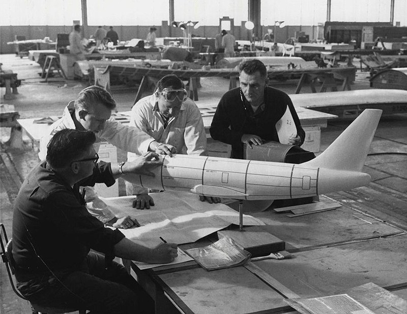

En 1964, dos pioneros de la aviación, Joseph Sutter y Jack Steiner, se dieron a la tarea de construir un avión emblemático para competir con el DC-9 y reemplazar al Boeing 727. El 19 de febrero de 1965, la constructora norteamericana, Boeing, anunció su intención de construir el modelo 737, un transporte aéreo de corto alcance propulsado por dos motores a reacción. El Boeing 737-100 fue bautizado el 17 de enero de 19677 e hizo su primer vuelo el 9 de abril del mismo año,3 y Lufthansa inauguró sus servicios con este avión el 10 de febrero de 1968. Sin saberlo, estaban construyendo la aeronave más famosa en la historia de la aviación comercial.
La fabricación del 737 está centralizada en fábrica Boeing Renton situada en Renton, Washington. Muchos 737 se emplean para mercados en los que anteriormente se empleaban aeronaves del modelo 707, 727, 757, DC-9, y MD-80/MD-90, y este modelo actualmente compite con las aeronaves de la familia Airbus A320.
Hoy en día, la serie Boeing 737 es conocida como el avión comercial más vendido del mundo.
Para más información, click en el siguiente video: